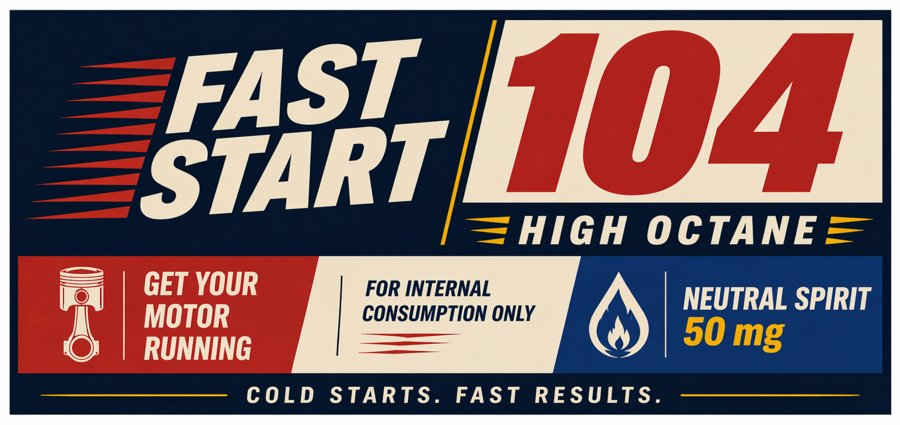

This game comes from a liquor brand. You must be of legal drinking age where you live (19 or older in British Columbia) to play.

It's 1984 in British Columbia. You've just turned 19, you've finished high school, and the only thing you've ever fixed is your own bicycle. You like engines. Nobody is going to hand you a career, so you're going to build one with your own two hands.
What's your name, mechanic?
A machine comes in that won't start. You inspect it, decide what's wrong, drag the right tools and parts to the bench, and put the repair steps in order. Then you pull the cord. If it fires on the first try, that's a Fast Start.
Stuck? Dad will give you a nudge for $5. Grandpa knows these old engines cold, and his advice costs $10. Break something and the repair comes out of your pocket. Do honest work and the customers come back.
Fast Start 104 is a 52% neutral spirit from Deep Blue Distilleries in Richmond, BC. In this game a Fast Start is a score. Nobody drinks on the job. Enjoy responsibly, and never drink and drive.